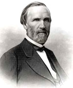

|

|

|
|
|
Radical Republican Congressman George Washington Julian was born in
Centreville, Indiana on May 5, 1817. He began studying law
in 1840 after teaching for several years. The law led him
to the state legislature in 1845, where he served as a
member of the Whig Party. In the late 1840s, Julian,
attracted by the Free Soil Party, left the Whigs and became
a fervent spokesman against slavery. His first term as a
United States Congressman began in 1849, and his principles
made him an opponent of the Compromise of 1850. Defeated in
his reelection bid because of this stand, Julian became the
vice presidential candidate for the Free Soil Party in 1852.
Following Franklin Pierce's victory, Julian remained an
advocate of abolition when he returned to Indiana and joined
the Republican Party.
Julian returned to the United States Congress in 1869,
where his support of abolitionism made him a prominent
spokesman for the Radical Republicans. He served as a
member of the Joint Committee on the Conduct of the War,
and, in his second term, was named the chairman of the
Committee on Public Lands. Both committees represented his
interests for the remainder of his years in the legislature:
an aggressive war policy, a harsh reconstruction, African
American suffrage, and a democratic homestead policy that
would keep public lands out of the hands of monopolists and
speculators. Following his departure from Congress in 1870,
Julian again changed parties but remained reform-minded. He
affiliated himself with the Liberal Republicans in 1871, but
ended up as a Democrat, and stumped for Samuel Tilden in
1876. In his last decades he consistently advocated land
and currency reform, as well women's suffrage.
Julian died in Irvington, Indiana on July 7, 1899.
Source: Joan Waugh, ed., Facts on File Encyclopedia of American
History: Civil War and Reconstruction, 1856 to 1869 (New York: Facts on
File, 2003), 194.
|